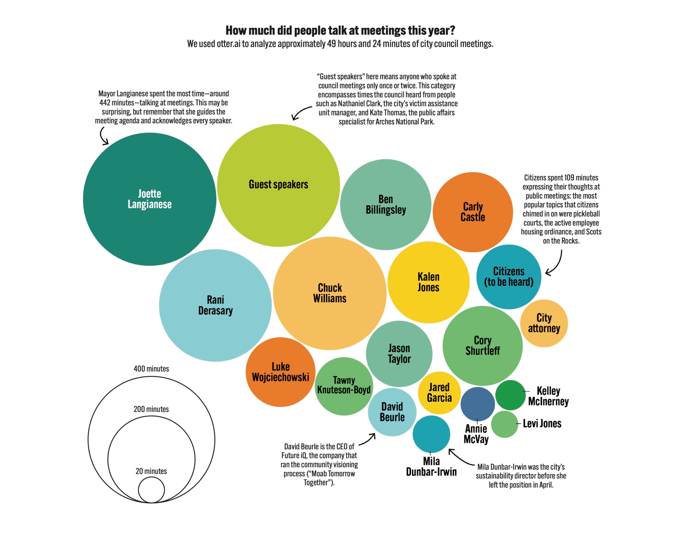
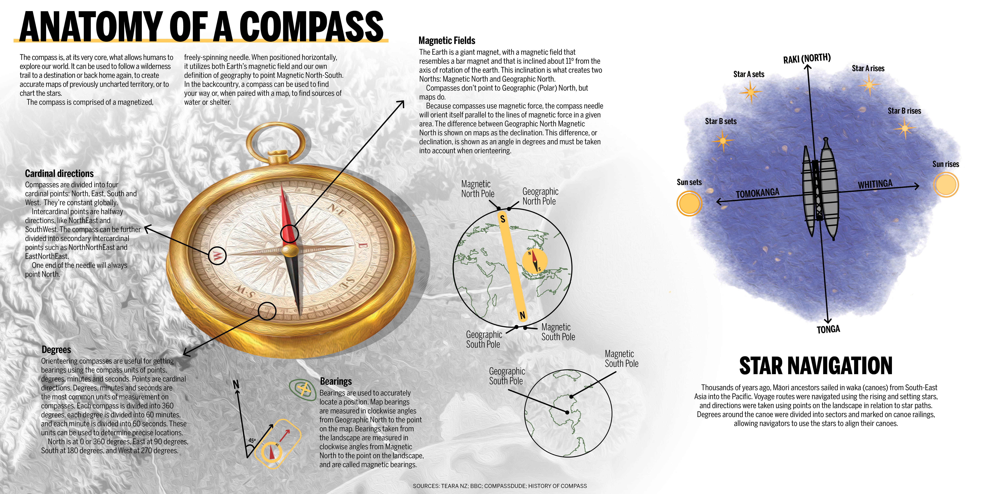
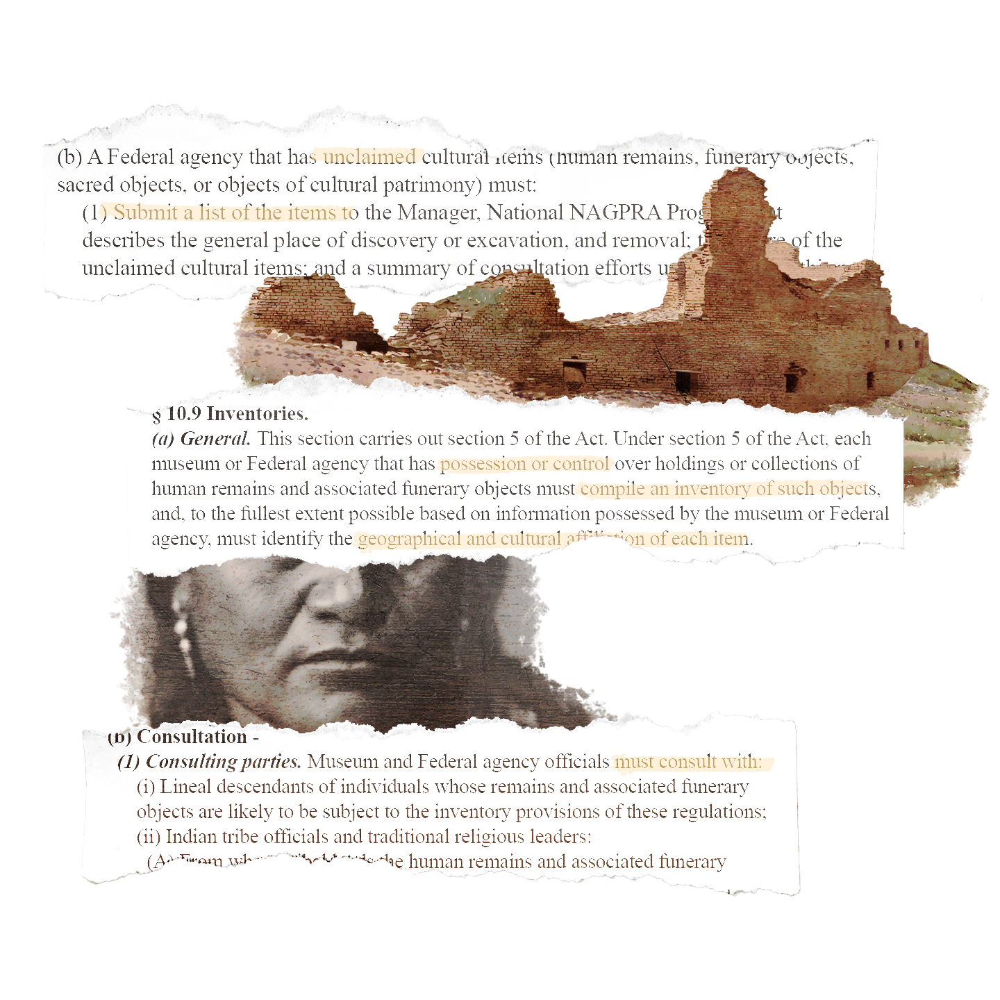
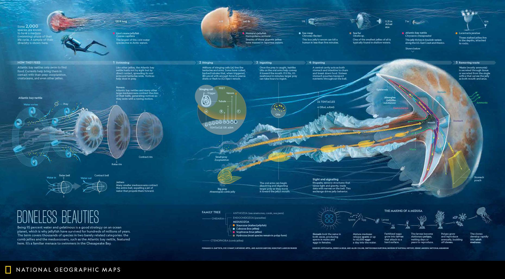

City Council meetings: Created for a story I did about City Council meetings in 2022.
Anatomy of a Compass: I made this for a backpacking class I took in New Zealand.
Biodiversity Strategy: I made this poster and data visualization to summarize a semester's worth of research I completed in New Zealand.

Repatriation: Created as artwork for a story I did on the Native American Graves Protection and Repatriation Act.
Boneless Beauties: Created icons for this infographic in National Geographic.
Italy collage: Created for social media when the Syracuse basketball team traveled to a tournament in Italy.

Hong Kong Protests: I worked as the art director for JERK Magazine; this spread was part of a branded special edition about protests.